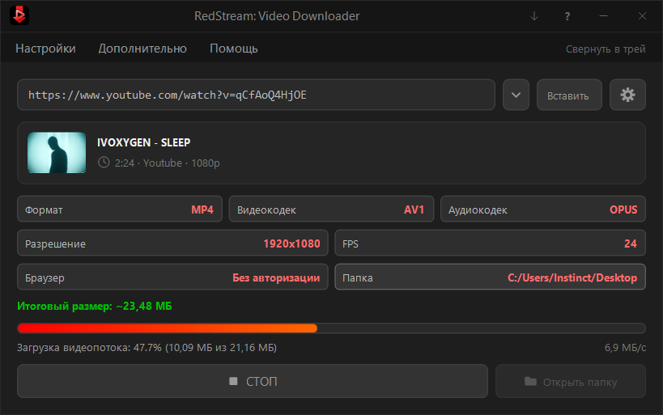

Лёгкая программа для Windows на базе yt-dlp: один файл около 2 МБ, без Python и установщика. YouTube, TikTok, Instagram и сотни других сайтов. AV1, VP9, H.264, H.265 — на ваш выбор.

Один компактный экран — и ничего лишнего
MKV и MP4 для видео, OPUS, M4A и MP3 для аудио. Разрешения, кодеки и FPS берутся из реальных форматов конкретного ролика, а итоговый размер файла показывается ещё до загрузки.
Вставьте ссылку — программа подгрузит миниатюру, название, длительность и лучшее доступное качество. Если не хватает https://, он добавится сам.
Нет AV1 или 60 к/с в выбранном разрешении? RedStream берёт ближайший вариант в том же разрешении, показывает его настоящий размер и предупреждает о замене. Никаких неожиданных загрузок «самого большого видео».
У видео несколько языков озвучки? Выберите нужный. Есть субтитры — вшейте их прямо в MKV или MP4. Если выбирать не из чего, кнопки неактивны.
Возьмите cookies из браузера или укажите файл cookies.txt. Во втором случае браузер закрывать не нужно, а файл используется и для предпросмотра.
Перетащите ссылку из браузера, из адресной строки, выделенный текст или файл .url прямо в окно. Старая ссылка заменится новой.
Нет рядом yt-dlp.exe, ffmpeg.exe или 7za.exe? При запуске программа скачает недостающее сама. ffmpeg качается в 8 потоков, поэтому быстро.
Вышла новая версия? Нажмите на плашку — RedStream скачает свежий RedStream.exe, заменит им текущий и перезапустится. Отдельные плашки следят за yt-dlp и ffmpeg.
HTTP, SOCKS4, SOCKS5 — с логином и паролем или без. Включается в меню «Дополнительно» и передаётся в yt-dlp через --proxy.
Всё управление в одном окне: три меню, плашки с параметрами, живой прогресс. Тёмная тема, собственный заголовок, никаких лишних диалогов.
Максимальная гибкость — под каждое видео отдельно
Слияние видео и аудио потоков — через FFmpeg. Субтитры вшиваются прямо в контейнер.
MP3 скачивается с максимальным качеством (--audio-quality 0). Только звук.
Внутри: av01 · vp9 · avc1/h264 · hvc1/hev1/bytevc1. Нужного кодека нет — берётся ближайший.
Фильтрация через acodec^=opus или acodec^=mp4a с запасным вариантом без фильтра.
Список строится из реальных форматов, у вертикальных видео — в виде 1080x1920. Условия height<= и fps<=.
--download-sections *start-end + --force-keyframes-at-cuts. Скачивается только нужный фрагмент.
Список языков берётся из самого видео. Выбранная дорожка пробуется первой, иначе качается обычная.
Обычные и автоматические субтитры оригинала. Вшиваются в MKV или MP4 через --embed-subs.
Итоговый размер считается до начала загрузки по тому же формату, который будет скачан.
Запланируйте загрузку на конкретное время — программа справится сама, пока вы заняты другими делами.
Нажмите ⚙ рядом с полем ссылки и укажите нужный диапазон — загрузится только он.
*start-inf*0-endПолная картина загрузки в реальном времени — ничего не скрыто.
Нужно скачать что-то ещё раз или найти старую ссылку — это пара кликов.
Один файл, никакого установщика
Один файл около 2 МБ. Без Python и без внешних библиотек.
RedStream.exeyt-dlp.exe, ffmpeg.exe и 7za.exe программа скачает сама. Готово!Для разработчиков. Программа написана на C++17 поверх Win32 API и GDI+.
Настройки, удобство и мониторинг на любой вкус
По умолчанию — «Загрузки/RedStream Downloader». Путь меняется плашкой «Папка» и запоминается. В планировщике та же папка.
Окно с поиском и повторным скачиванием. Сами записи лежат в history.txt, который открывается из окна истории.
Галочка в «Настройках» прописывает программу в автозагрузку Windows. Вступает в силу сразу, без перезапуска.
По завершении появляется системное уведомление с названием видео. Работает даже при свёрнутом окне.
HTTP, SOCKS4, SOCKS5 с логином и паролем. Настройки сохраняются и передаются в yt-dlp через --proxy.
Из трея можно открыть окно, обновить компоненты, посмотреть «О программе» или выйти.
Причины ошибок записываются в log.txt. Открывается из «Настройки → Открыть лог-файл».
Успех — Windows Background.wav, ошибка — Windows Foreground.wav. Нет файла — системный сигнал.
В планировщике можно выбрать: ничего не делать, выключить, сон или гибернация. Перед действием есть время отменить.
На чём работает RedStream
Ядро загрузки, 1000+ сайтов
Слияние потоков, конвертация, субтитры
Распаковка ffmpeg при установке и обновлении
Разбор данных о видео
Окна, трей, drag & drop, автозапуск
Отрисовка интерфейса, миниатюры
Загрузки, проверка обновлений
Статическая сборка одного .exe